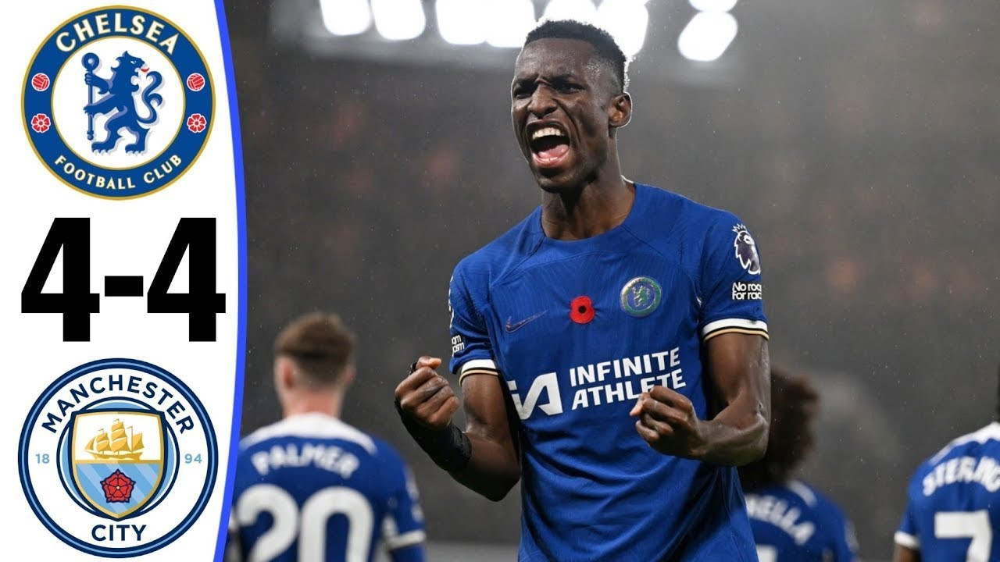
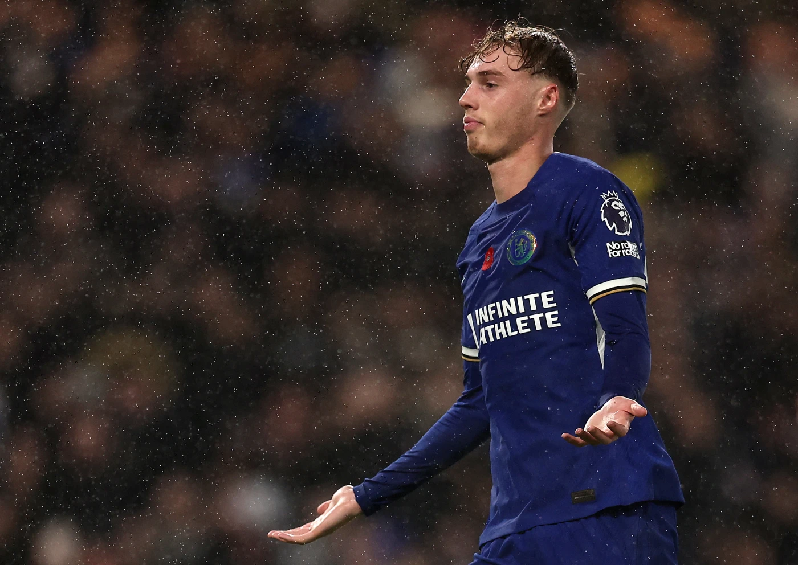

Latets News
Match Report
An incredible match at Stamford Bridge ended with the honours shared between Chelsea and Manchester City, with eight goals scored between the two sides in a thrilling encounter which saw momentum shift back and forth constantly.
After the 4-1 win over Tottenham last time out, Chelsea once again showed that we could go toe-to-toe with the best teams in the Premier League and succeed. Although there was no win at the final whistle this time around, it was a brilliant display of attacking football and determination from the Blues.It was Manchester City who opened the scoring from the penalty spot, but just over 10 minutes later it was Chelsea who were in the lead, after Thiago Silva had headed in Conor Gallagher's corner and Raheem Sterling scored from close range against his former club.City levelled from a corner of their own, via Manuel Akanji, shortly before half-time, but there was even more to follow after the break. We suffered an early setback when Erling Haaland bundled across the line for his second goal of the game. That was the way it remained for quite a while, before Nicolas Jackson reacted quickest in the box from a rebound to level again.

Inside Training
Palmer on why he couldn’t say no to Chelsea
Cole Palmer has explained the reasons behind his decision to leave behind everything he knew to move to London and join Chelsea in the summer.
It was a decision which raised eyebrows in some sections. At the end of August, Cole Palmer had picked up winner’s medals in the Premier League, FA Cup and Champions League last season, and scored in both the Community Shield and UEFA Super Cup at the start of the current campaign.However, on the back of those successes with Manchester City, where the 21-year-old had spent his whole career so far, Palmer decided to call an end to his time there and swap the Etihad for Stamford Bridge by joining Chelsea.It was never going to be an easy decision to leave the city where he was born and raised, and the club where he had played since Under-8s level, but the forward explained why he felt it was an important move to keep progressing in his career.
